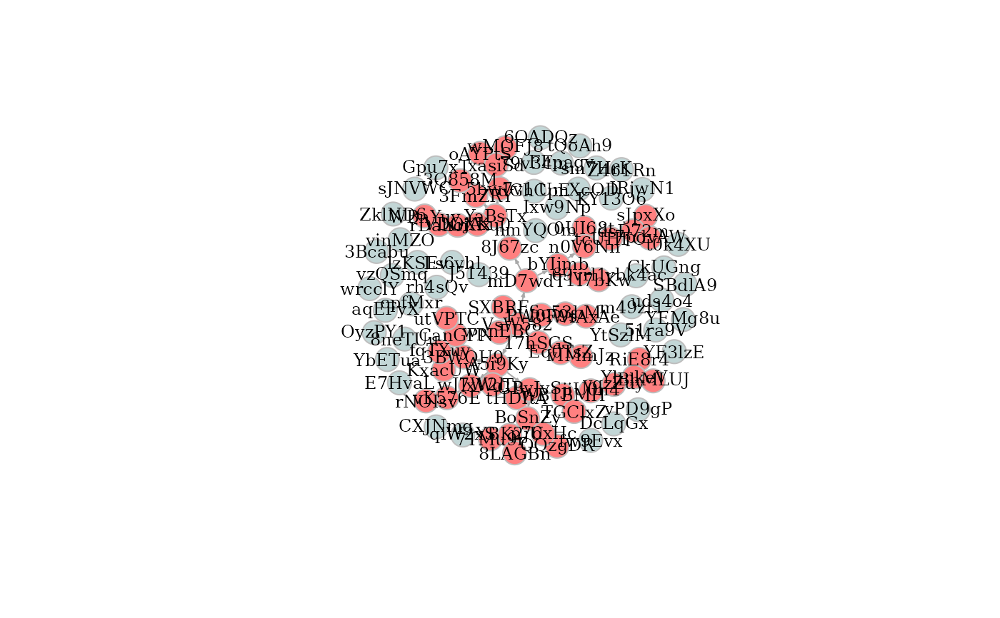
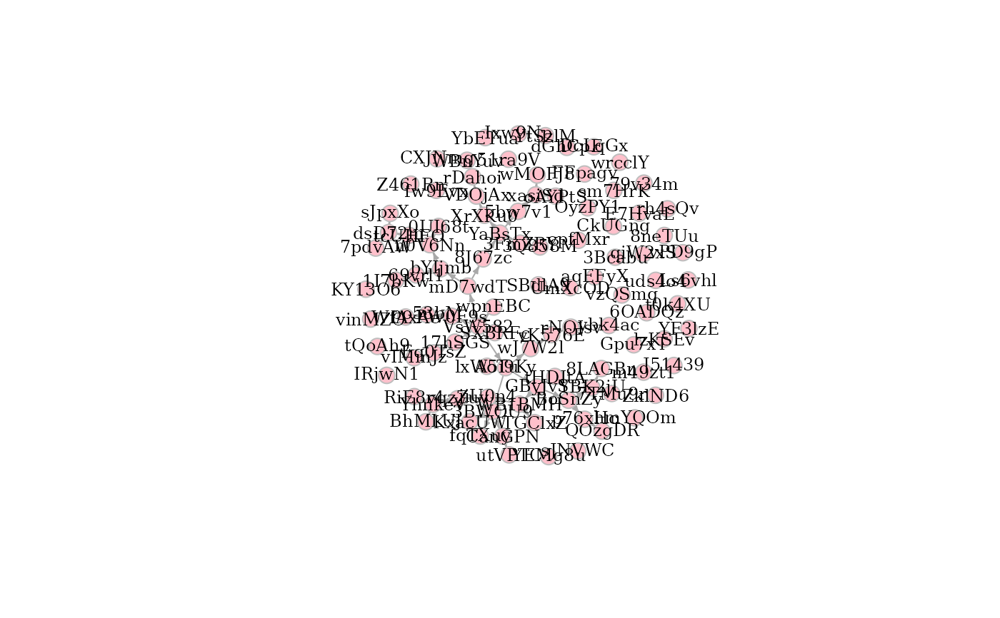
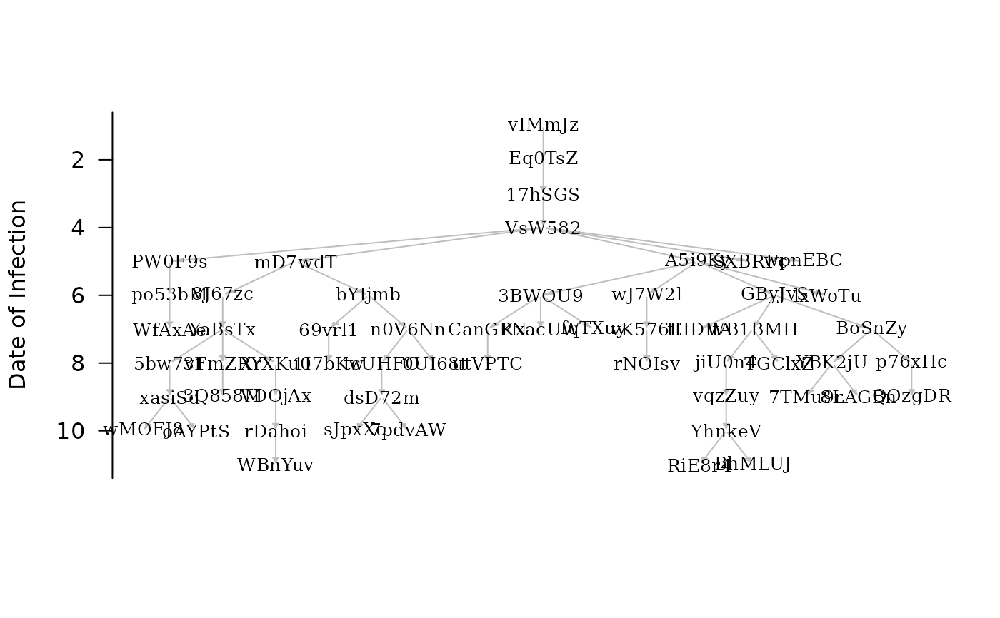
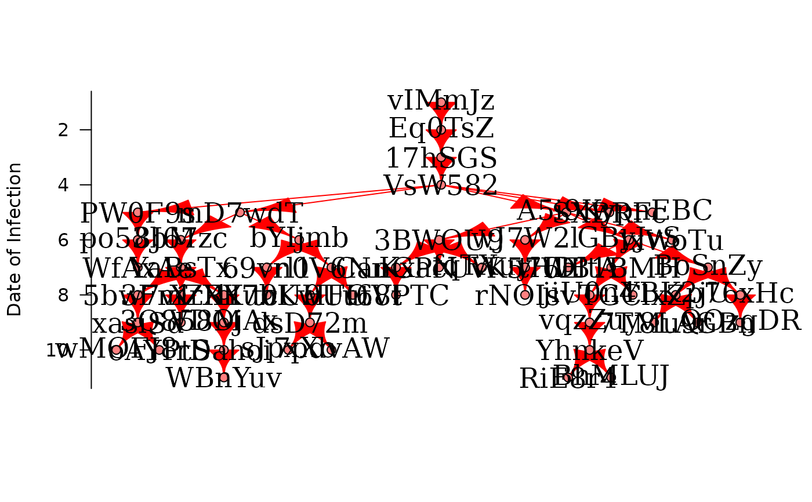

The plot method for simulacr objects can be used to produce different types of graphs, either interactive (by default) or static.
Arguments
- x
A
simulacrobject returned bysimulate_outbreak().- method
A character string indicating the plotting method:
"visNetwork"(default) for an interactive plot,"igraph"for a static graph, or"tree"for a static tree with a time axis (also uses igraph).- cases_only
A
logicalindicating if cases only should be included in the converted object; defaults toFALSE. Fixed toTRUEifmethodis "tree"- ...
For
plot, further arguments passed toepicontacts::plot.epicontacts()origraph::plot.igraph(). For "tree",rescale = FALSEandasp = 0are fixed.
Examples
## simulate an outbreak
set.seed(2)
x <- simulate_outbreak(
n = 100, duration = 50, tau = 0.3,
contacts = make_random_contacts(100, 5)
)
## plot the outbreak using the default interactive method
plot(x)
## plot using igraph, with some examples of customization
plot(x, method = "igraph")

plot(x, method = "igraph", vertex.color = "pink",
vertex.size = 10, edge.arrow.size = 0.5
)

## plot using a tree layout with time axis
plot(x, method = "tree")

plot(
x, "tree", edge.color= "red", edge.arrow.size = 2,
vertex.shape = "circle", vertex.size = 20, vertex.label.cex = 1.5
)
